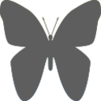
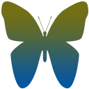
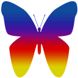

Assignment 3
CSSE1001/7030
Semester 2, 2017
Version 1.1.2
25 marks / 30 marks
Due Friday 27 October, 2017, 21:30
This assignment provides you the opportunity to apply concepts taught throughout the course to extend the functionality of a basic dot game, which has been modelled on Dots & Co.
The assignment will focus on the concept of Graphical User Interfaces (GUIs). You will be required to extend the base game with basic, intermediate, and advanced features. Postgraduate students will have an additional task.
Students are encouraged to review Dots & Co, as well as other similar games, to better understand how the game is played and for inspiration on advanced features.
Because this assignment deals with multiple files, students are encouraged to investigate a more capable IDE. The author recommends PyCharm, which is free for students.
Game Play Example
Dots & Co is a simple game where the player tries to create connections between dots on a grid in order to reach objectives.
The player can click on a dot and drag to an adjacent dot (up/down/left/right only) to select a dot to form a connection, continuing on to another adjacent dot to select it to form another connection, et cetera. When the player stops dragging and releases, all dots in that have been selected will be activated and removed. The most basic dots do not have any effect when activated. Replacements drop down from the cells above, and new dots are generated off-screen.
If the player drags back to their second-most-recently selected dot, the most-recently selected dot is deselected.
When the user finishes their selection, if the selection contains a loop, all dots of the selected kind will also be included in the activation.
Shortly after this assignment's release, a link to a video overview will be added here.
CSSE1001 students will be marked out of 25 and CSSE7030 students will be marked out of 30 based on the following breakdown. Tasks may be attempted in any order, but it is recommended to follow this breakdown, top-down.
| Sub–Task | Marks | |
|---|---|---|
| Task 1 Basic Features |
10 marks | |
| App Class |
5 marks | |
| InfoPanel Class | 2 marks | |
| File Menu/Popup Dialogs | 1 mark | |
| IntervalBar Class | 2 marks | |
| Task 2 Intermediate Features |
7 marks | |
| CompanionDot | 2 marks | |
| Dots | 2 marks | |
| Companion | 3 mark | |
|
Task 3 Advanced Features |
Sophisticated, additional functionality | 8 marks |
|
Postgraduate CSSE7030 only |
5 marks for CSSE7030; 0 marks for CSSE1001 |
|
| ActionBar | 3 marks | |
| More Dots & Companions | 2 marks |
| Description | Marks | |
|---|---|---|
| Code Quality | Code is readable. Appropriate and meaningful identifier names have been used. Simple and clear code structure. Repeated code has been avoided. | 10% |
| Code has been simplified where appropriate and is not overly convoluted. | 10% | |
| Documented clearly and concisely, without excessive or extraneous comments. | 10% | |
| Functionality | Components are functional, without major bugs or unhandled exceptions. | 70% |
Before beginning work on the assignment you must download a3_files.zip
provided from the course website.
Inside a3_files.zip,
there should be a file called a3.py. This is the file where you will write your
assignment. The other files are support files. These must not be edited. Their
purpose is explained below.
Some tasks require you to submit brief descriptions of features implemented (, , ). These descriptions
must be submitted in a single PDF document called description.pdf
— other formats such as Microsoft Word or misnamed files may not be accepted.
The file a3.py is the main assignment file. This file includes a few hundred lines of code
that leverages the support code to help you get started. You must modify & add to this file in order
to complete the assignment tasks.
You are also permitted to create other files to simplify the separation of tasks (i.e.
task1.py, task2.py, etc.). If you do this, a3.py must be the
entry point to your application. One way to achieve this is to move DotsApp to a separate
file, such as base.py. Regardless of how you structure your files, the code must
all be able to be demonstrated by running a3.py.
You have been supplied with a copious amount of support code to help you complete this assignment. To begin the assignment, you do not need to understand much of this code. As you progress through the tasks, the degree to which you should understand this code will increase.
| File | Description | Understanding |
|---|---|---|
| images/companions/ | Images of companions | Task 2 |
| images/dots/ | Images of dots | Task 2 |
| modules/ | Third–party libraries | Task 3 |
| cell.py | Cell classes | Task 3 (AbstractDot class) |
| companion.py | Companion classes | Task 2 (AbstractCompanion class) |
| dot.py | Dot classes | Task 2 (AbstractDot class) |
| game.py | Modelling classes for the game | Task 2 (DotGrid, DotGame classes) |
| factory.py | Classes to manage creation of dots, cells, etc. | Task 3 |
| util.py | Collection of helpful utility functions | Task 2 (ImageManager class) |
| view.py | Task 1 (ObjectivesView class) |
Note: Only required understanding has been listed. Since task 3 is open-ended, it would be helpful to have a good understanding of most of the support code to know what can be leveraged to your advantage.
Note: In this section, the word function is used to mean anything that is able
to be called like a function, such as a method, a lambda, etc. The generic technical term for this is
callable.
The DotGame & GridView classes follow a pattern which allows a function to
be attached to an event. When the event is triggered/emitted, the function is called. This function is
called a listener or a callback, and this attaching action can also be referred to as binding to or
listening for an event. Code that triggers an event can also supply arguments to the event functions.
This pattern is called the Event Emitter pattern, and is an implementation of the Observer pattern (the Publisher/Subscriber pattern is similar). It is also an example of a higher–order function (the function does the binding accepts the listener function as an argument).
While it is also quite a similar approach to how Tkinter handles commands for button presses, the Event Emitter pattern is far more flexible in general, primarily because multiple listeners can be attached to the same event.
The events emitted by the DotGame & GridView classes are very useful,
particularly for creating non-blocking animation. The supplied code binds to every relevant event
emitted by these classes. See DotsApp.bind_events in the a3.py file.
The purpose of this task is to create the basic graphical user interface (GUI) for the Dots game. There are several sub–tasks that need to be completed for this task. You will be working towards creating the user interface demonstrated below.
You have been supplied with an incomplete implementation of DotsApp to start with. You
should modify this class to implement the required functionality.
The very first part of this task is to get the app onto the screen. Add your GUI instantiation code
to the main function in a3.py
Next, review the DotsApp class and modify the code as required to implement the basic
GUI.
The title of the window should be set to something appropriate (i.e. Dots). This also
applies to any window in subsequent tasks.
As the basic GUI is improved in subsequent tasks, the DotsApp class will need
to be modified accordingly. It is also permitted, to create separate classes for each task
using inheritance — this is not required.
Define a class named InfoPanel, which inherits from tk.Frame. This class
is used to display information to the user, such as their score, remaining moves and objectives,
etc. The InfoPanel's widgets must:
DotsApp._refresh_status),
ObjectivesView
from view.py to display the objectives and how many of each remain
1 Matching the layout of the example precisely can be achieved far more easily using Tkinter's Grid Geometry Manager (instead of pack). Students are permitted to use this if they wish, but for simplicity, an approximation using pack is equally acceptable.
Note: For convenience, you should have a setter method for each of the relevant
widgets. I.e. set_score(score), etc.
Implement a menu bar, with a File menu. The File menu should have the following
entries:
New Game: Restarts the gameExit: Exits the applicationWhen the user attempts to exit the application, either by the file menu or otherwise, they should first be prompted with a dialog to confirm that they indeed want to quit the application. Further, when the game is over, the user should be shown a dialog informing them of the outcome (either win or loss).
Note: On Mac OS X, the file menu should appear in the global menu bar (top of the screen).
Implement a class, IntervalBar, which inherits from tk.Canvas. This class
should display a horizontal progress bar with vertical lines dividing each step,
allowing the user to see progress from 0, 1, …, steps-1, steps, inclusive. For
example, in Interval Bar Example above, there are 6 steps and the current
progress is 2.
Add the interval bar to the application and increase its progress every time the user makes a move. When maximum progress is reached, reset the progress to for the next turn (it can start at 0 or 1).
IntervalBar must be a subclass of tk.Canvas. tkinter.ttk.Progressbar
must not be used.
The purpose of this task is to extend the functionality of the basic GUI by adding additional dots and companion functionality.
Companions are helpful side characters that can be activated to perform a special ability. Every time a companion dot is activated, the companion is charged (by one). When a companion is fully charged, their ability is activated. Once activated, a companion's charge is reset to zero, ready to be charged again. By default, a companion is fully charged when it has been charged six times.
Add another item to the file menu to allow the user to choose between a New Game either with or without a companion.
Companion Dot
Implement the CompanionDot class by extending BasicDot in game.py, and
include it in your game.
It may be helpful to use CompanionGame from the game.py file. During
development of the companion dot, it may be helpful to use UselessCompanion. A
custom companion will be implemented in the next section.
Implement the following, and add them to your game:
Some companions require a certain type of dot (i.e. when activated they may place a special type of dot). If you choose such a companion, you should choose the dot it requires as one of your dots.
You should also add an IntervalBar to your InfoPanel and update it to show
how much charge the companion has after each move (this replaces the IntervalBar added to the application in ).
This task is open ended. It is up to you to decide what to do for this task. Marks will be awarded based on the sophistication of the features you choose to implement. Ensure that you consult with course staff before you commence this task to ensure that the features are sufficiently sophisticated.
You are encouraged to utilize extra Python modules to help you implement your desired functionality.
You must also submit a brief description of the features you have implemented for this task. This must
be included in description.pdf, along with any other required descriptions —
see .
The description for this task should also contain an outline of any third party Python modules you have
used, and instructions on how to install them. For example if you have used Pillow module, then the
following would be sufficient:
Version 4.2.1 of Pillow has been used. Install the Pillow module with pip using the command:
pip install Pillow
If using multiple third–party libraries, it is a good idea to list their names and versions first, using bullet points, and then provide specific installation instructions afterwards.
Be sure to format the description document neatly to ensure that the marker can quickly scan the document for relevant information (i.e. by using larger, bold headings, vertical whitespace between sections, section numbers, etc.).
These suggestions are not necessarily equal in difficulty, and the complexity will likely vary based upon the particular implementation. Students should discuss potential features with course staff prior to implementing them, to get feedback on the sophistication.
This task is only required for CSSE7030 students. CSSE1001 students are permitted to attempt this task, but will be not be awarded marks for it. Along with functionality & code quality, robustness of code design will be a major factor in the awarding of marks.
The action bar will allows the user access to special actions. Implement the ActionBar
class, which inherits from tk.Frame and add it to your game.
The user should only be able to activate each action once per game.
It is worth noting the overlap of functionality between these actions and the Penguin companion & BeamDot.
Implement the following:
Add a way for the user to choose the companion they want to play with (i.e. a separate menu item for each companion).
Be sure to include a brief description of these in description.pdf &mdash see
If any any dots or companions are implemented, the submission must include a brief description of what
has been implemented. This must be included in description.pdf — see
Students may use the supplied images for dots/companions, but may also use images of their own choosing.
Students are also permitted to implement dots/companions of their own choosing, but should discuss this with course staff prior to doing so.
Any dots implemented must inherit from AbstractDot (or one of its
subclasses) in the dot.py file. Similarly, any companions implemented
must inherit from AbstractCompanion (or one of its subclasses) in the
companion.py file. This is very important, as these
Abstract classes define a common interface with all dots/companions (i.e. one can expect
that any method defined on AbstractDot will also be available on any type of Dot class).
For the following descriptions, the term adjacent dots includes dots that are diagonally
adjacent.
A butterfly dot starts in a cocoon. The first time an adjacent dot is connected, the coocoon cracks. The second time, the butterfly emerges. The third time, the butterfly dot is activated. When a butterfly dot is activated, it activates all dots a 3-by-3 area around itself. A butterfly dot cannot be selected.
  Note: There will not be a practical interview for the third assignment.
Your assignment must be submitted via the assignment three submission link on Blackboard.
You must submit a zip file, a3.zip, containing a3.py and all the files
required to run your application (including images). You may omit the
support code — if you do so, the most recent version will be used. If you have attempted a
relevant task, this zip file must also contain your description.pdf file.
Late submission of the assignment will not be accepted. In the event of exceptional circumstances, you may submit a request for an extension.
All requests for extension must be submitted on the UQ Application for Extension of Progressive Assessment form: http://www.uq.edu.au/myadvisor/forms/exams/progressive-assessment-extension.pdf at least 48 hours prior to the submission deadline. The application and supporting documentation must be submitted to the ITEE Coursework Studies office (78–425) or by email to enquiries@itee.uq.edu.au.
Any changes to this document will be listed here.
CompanionGame class to game.py
It is recommended that you immediately
update your support code, download the new a3.py and copy your progress into it
game.py) and
dependencies
dot.py:
AbstractDot: Removed __eq__; Added after_resolved,
can_connect, will_be_removed, PRIORITYAbstractKindlessDot, WildcardDotAbstractCompanion.activate's docstring (added yield)ObjectivesView.drawa3.py:
DotsApp._score to _refresh_status and removed
parameter
DotsApp._animate, removeDotsApp._connect, _drag,
_dropactivate, animate; Added reset
ANIMATION_DELAYS in
a3.py)
game.py to cell.py, factory.py